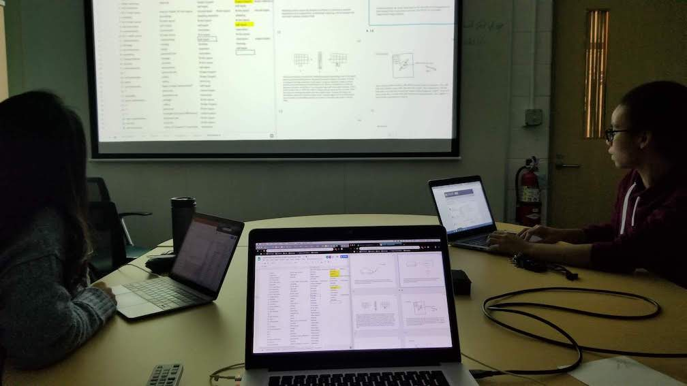

Research
University of Michigan - Daly Research Lab

Design Thinking in Engineering
I am currently a reserach assistant in the College of Engineering:
- user interviews to study front-end design practices and ideation.
- Comparing how design processes are being taught in engineering verses how they compare to the best practices in design.
- Analyzing previous user studies and quantitative research data to aid in the early stages of idea generation and concept selection.